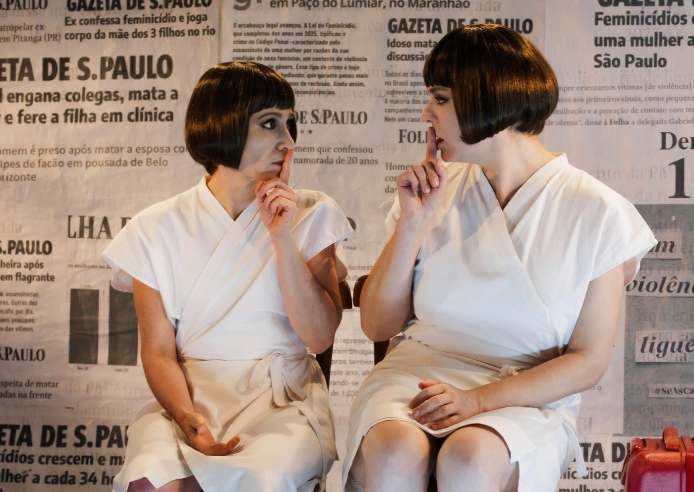

Alices espetáculo em cartaz no Sesc Pinheiros

Espetáculo de Jarbas Capusso Filho e direção de Joana Dória denuncia a violência de gênero e celebra a escuta e o acolhimento entre mulheres
Inspirado nos alarmantes índices de feminicídio no Brasil — que somaram 1.500 casos em 2024, segundo o Laboratório de Estudos de Feminicídios (LESFEM) —, o espetáculo Alices estreiou no dia 13 de novembro, no Sesc Pinheiros, em São Paulo.A temporada segue até 13 de dezembro, com sessões de quinta a sábado, às 20h30. Com texto de Jarbas Capusso Filho, direção de Joana Dória e atuações de Nicole Cordery e Fábia Mirassos, a montagem propõe um olhar crítico e poético sobre a violência de gênero e a urgência de políticas públicas de proteção às mulheres.
Duas mulheres, um mesmo nome
Com atmosfera onírica e linguagem simbólica, Alices parte de um encontro inusitado entre duas mulheres desconhecidas que compartilham o mesmo nome. Presas em um “não-lugar” — um espaço indefinido, entre o sonho e a realidade —, elas esperam alguém que talvez nunca chegue. No diálogo que se constrói, suas histórias emergem aos poucos, revelando feridas, afetos e as semelhanças profundas que as unem para além do nome.
“A peça pretende provocar a análise crítica da violência de gênero. O realismo fantástico permite que o público pense e sinta, mas também reflita sobre as causas estruturais dessas violências”, explica Jarbas Capusso Filho, autor da dramaturgia.
Uma narrativa poética e política
A diretora Joana Dória constrói a encenação como uma instalação cênica, em que o espaço é também personagem. Segundo ela, a obra busca “denunciar a presença indigesta e cotidiana do feminicídio na sociedade brasileira, informar e conscientizar o público sobre o tema e honrar a memória das mulheres vítimas da violência de gênero”.
A ambientação evoca um limbo simbólico, atravessado por referências visuais a artistas que trataram o corpo feminino e a violência em suas obras, como Ana Mendieta, Elina Chauvet e Rosana Pauli. Nesse cenário, o espectador é convidado não apenas a assistir, mas a refletir e compartilhar a dor e a resistência que atravessam essas histórias.
“A dramaturgia se baseia em dados e fatos reais, mas cria uma ficção que conecta o público por meio da empatia e da escuta. É um texto que transita entre o absurdo, o humor e a densidade emocional”, afirma a diretora.
O poder do acolhimento
Para Nicole Cordery, que divide o palco com Fábia Mirassos, Alices é um exercício de escuta e solidariedade:
“Essas duas mulheres se encontram nesse limbo e se escutam com respeito. A cura passa por esse acolhimento. Em uma sociedade que ensina as mulheres a se calarem, nossa peça mostra o oposto — a força de falar e de se apoiar.”
Já Fábia Mirassos ressalta o tom delicado e não panfletário da obra:
“É um trabalho que, apesar da dureza do tema, traz humor, leveza e poesia. A direção da Joana tem uma abordagem sensível, com momentos quase cinematográficos, em que o silêncio diz tanto quanto as palavras.”
Sobre a equipe criativa
Joana Dória é encenadora, atriz e professora, mestre em Artes Cênicas pela ECA-USP. Entre suas direções recentes estão Não Fossem as Sílabas do Sábado (Prêmio Shell de Dramaturgia, 2024), As Mulheres dos Cabelos Prateados (2022) e Garotas Mortas (2022). Sua trajetória une teatro, pesquisa acadêmica e ativismo artístico em torno da presença feminina e das estruturas de poder nas artes cênicas.
Jarbas Capusso Filho é dramaturgo, roteirista e psicólogo. Escreveu as peças Na Hora do Adeus (2018), A Noite em que Blanche DuBois Chorou sobre a Minha Pobre Alma (2014), entre outras. Em 2001, recebeu o Prêmio Jornalístico Vladimir Herzog de Anistia e Direitos Humanos, pela reportagem Tão Longe.
Ficha Técnica
Idealização e Direção: Joana Dória
Dramaturgia: Jarbas Capusso Filho
Elenco: Fábia Mirassos e Nicole Cordery
Assistência de Direção: Madu Arakaki
Desenho de Luz: Henrique Andrade
Trilha Sonora Original: Pedro Semeghini
Músicos: Camila Mirelli da Silva Rodrigues (violino), Daniel Sousa Lima (violoncelo), Guilherme Rodrigues dos Santos (violino) e Mylena Cavalcanti Lima (viola)
Cenário e Figurino: Joana Dória
Visagismo: Fábia Mirassos
Operação de Luz e Som: Giovanna Gonçalves e Henrique Andrade
Fotos: João Caldas
Comunicação Visual: Manuela Afonso
Assessoria de Imprensa: Pombo Correio
Produção Executiva: Madu Arakaki
Direção de Produção: Carol Vidotti
Sinopse
Duas mulheres desconhecidas, ambas chamadas Alice, se encontram em um lugar indefinido à espera de não se sabe quem. O diálogo que se desenrola entre elas revela aos poucos suas histórias — e o que mais compartilham além do nome. Entre o real e o onírico, Alices é uma metáfora sobre o feminino, a escuta e a resistência diante da violência de gênero.
Serviço
Espetáculo: Alices
Texto: Jarbas Capusso Filho
Direção: Joana Dória
Elenco: Nicole Cordery e Fábia Mirassos
📅 Temporada: 13 de novembro a 13 de dezembro de 2025
🕗 Horários: Quinta a sábado, às 20h30
➡️ Sessões especiais:
Feriados 15/11 e 20/11 às 18h
28/11 às 16h e 20h30
📍 Local: Sesc Pinheiros – Auditório Rua Paes Leme, 195 – Pinheiros, São Paulo
🎟️ Ingressos: R$15 (Credencial Plena) | R$25 (meia-entrada) | R$50 (inteira) Vendas online: sescsp.org.br
🎭 Capacidade: 100 lugares
⏱️ Duração: 60 minutos
🔞 Classificação: 14 anos